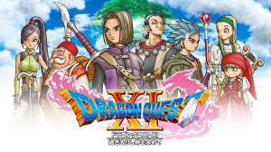
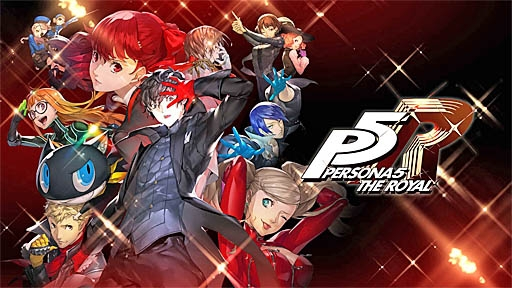
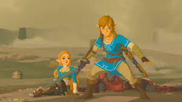

趣味（ゲームについて）
ゲームが好きです！RPGをよくやります
プレイした中でおすすめのものを載せてみます
ドラクエ11
「そして、勇者は悪魔のこと呼ばれた」
勇者が魔王を倒す王道RPGの最新ナンバリング
悪魔の子と呼ばれた主人公が様々な人物と出会い冒険していく話
シリーズ11作目ですが今までのナンバリングの要素も取り入れられており過去作をやっているとこれは...!となるような要素がたくさん詰められている
おなじみの魔法や特技などを使って戦う王道コマンドバトルも遊びやすい
シリーズ初めてでも楽しめる神作です
ペルソナ５ ザ・ロイヤル
「奪え、その意思で。」
主人公ジョーカー達が悪い大人たちの心から歪んだ欲望を盗んでいく話
オシャレなUIやbgmが特徴
コマンドバトルなのにスピード感があり爽快
ストーリーもとてもボリュームがあり長く楽しめる1作
ゼルダの伝説 ブレス オブ ザ ワイルド
「駆ける、生きる、護る。」
100年の眠りから目覚めた主人公リンクが厄災ガノンを討伐する話
オープンワールドは歩き回っているだけで様々な発見があり楽しい
ゼルダ・リンク・４英傑などの主要キャラクターのキャラクター性がとても良い！
ストーリーも引き込まれるように見ることができる、そんな作品
100年前の世界を描いた「厄災の黙示録」、本作クリア後を描いた「ティアーズ オブ ザ キングダム」も面白いのでぜひ！